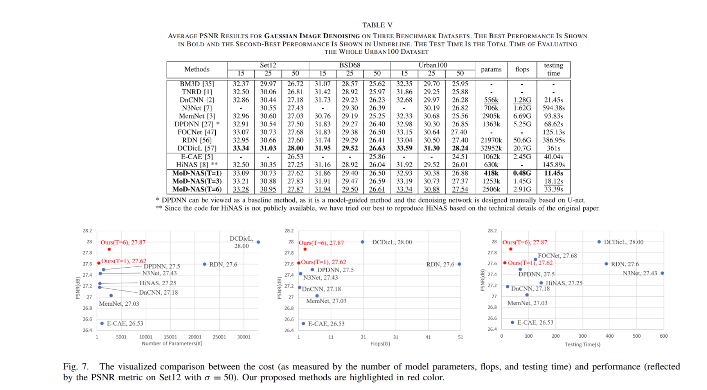
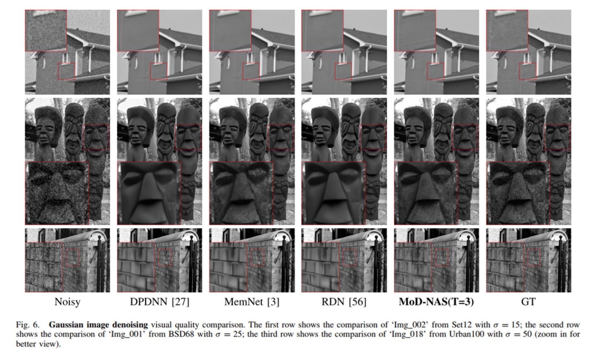
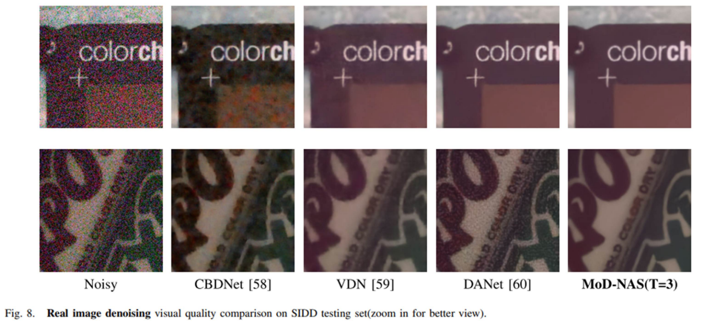

Abstract
Unlike the success of neural architecture search (NAS) in high-level vision tasks, it remains challenging to find computationally efficient and memory-efficient solutions to low-level vision problems such as image restoration throughNAS. One of the fundamental barriers to differential NAS based image restoration is the optimization gap between the super-network and the sub-architectures, causing instability during the searching process. In this paper, we present a novel approach to fill this gap in image denoising application by connecting model-guided design (MoD) with NAS (MoDNAS). Specifically, we propose to construct a new search space under a model-guided framework and develop more stable and efficient differential search strategies. MoD-NAS employs a highly reusable width search strategy and a densely connected search block to automatically select the operations of each layer as well as network width and depth via gradient descent. During the search process, the proposed MoD-NAS remains stable because of the smoother search space designed under the model-guided framework. Experimental results on several popular datasets show that our MoD-NAS method has achieved at least comparable even better PSNR performance than current state-of-the-art methods with fewer parameters, fewer flops, and less testing time.
Paper & Code & Demo
Experimental Results

Result Visualization
-


Citation
@ARTICLE{MoD-NAS-TIP2023,
title={Searching Efficient Model-Guided Deep Network for Image Denoising},
author={Ning, Qian and Dong, Weisheng and Li, Xin and Wu, Jinjian},
journal={IEEE Transactions on Image Processing},
year={2023},
volume={32},
number={},
pages={668-681},
doi={10.1109/TIP.2022.3231741}}
Concat
Qian Ning, Email: ningqian@stu.xidian.edu.cn
Weisheng Dong, Email: wsdong@mail.xidian.edu.cn